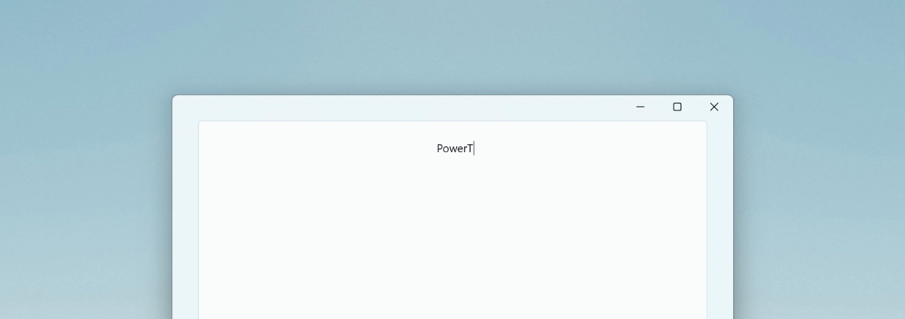

Quick Accent utility

Quick Accent utility provides an alternative way to type accented characters in Windows PowerToys. This tool helps users whose keyboards don't support specific accents with quick key combinations, making it easier to type international characters. The utility is based on Damien Leroy's PowerAccent.
In order to use the Quick Accent utility, open PowerToys Settings, select the Quick Accent page, and turn on the Enable toggle.
How to activate
Activate by holding the key for the character you want to add an accent to, then (while held down) press the activation key (Space key or Left / Right arrow keys). If you continue to hold, an overlay to choose the accented character will appear.
For example: If you want "à", press and hold A and press Space.
With the dialog enabled, keep pressing your activation key.
Character sets
You can limit the available characters by selecting character sets from the settings menu. Available character sets are:
- Catalan
- Currency
- Croatian
- Czech
- Danish
- Gaeilge
- Gàidhlig
- Dutch
- Greek
- Estonian
- Finnish
- French
- German
- Hebrew
- Hungarian
- Icelandic
- Italian
- Kurdish
- Lithuanian
- Macedonian
- Māori
- Norwegian
- Pinyin
- Polish
- Portuguese
- Romanian
- Slovak
- Slovenian
- Spanish
- Serbian
- Serbian Cyrillic
- Swedish
- Turkish
- Vietnamese
- Welsh
Settings
From the Settings menu, the following options can be configured:
| Setting | Description |
|---|---|
| Activation key | Choose Left/Right Arrow, Space or Left, Right or Space. |
| Character set | Show only characters that are in the chosen sets. |
| Toolbar location | Position of the toolbar. |
| Show the Unicode code and name of the currently selected character | Shows the Unicode code (in hexadecimal) and name of the currently selected character under the selector. |
| Sort characters by usage frequency | |
| Start selection from the left | Starts the selection from the leftmost character for all activation keys (including Left/Right arrow). |
| Input delay | The delay in milliseconds before the dialog appears. |
| Excluded apps | Add an application's name, or part of the name, one per line (e.g. adding Notepad will match both Notepad.exe and Notepad++.exe; to match only Notepad.exe add the .exe extension). |
Install PowerToys
This utility is part of the Microsoft PowerToys utilities for power users. It provides a set of useful utilities to tune and streamline your Windows experience for greater productivity. To install PowerToys, see Installing PowerToys.